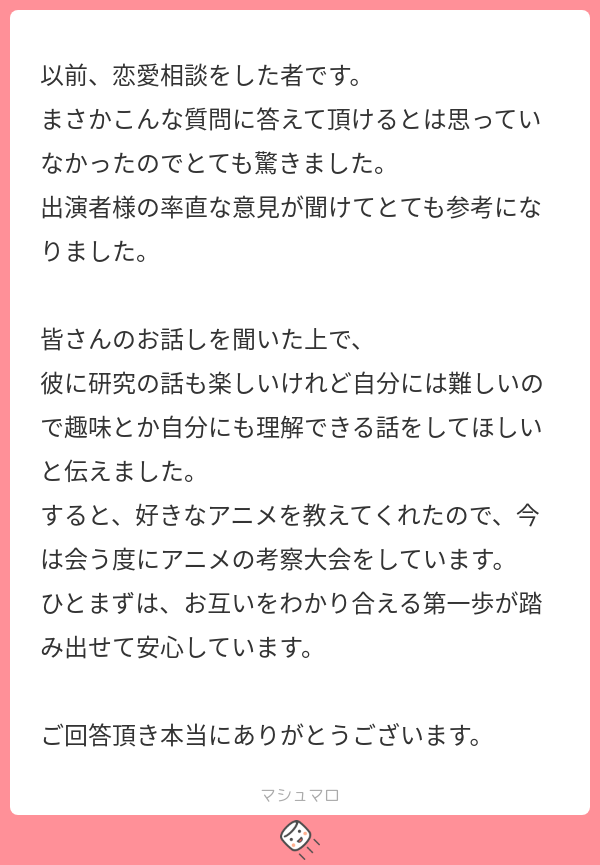

46: There's no resource problem on earth
Starring


Show notes
目次
00:00 Ep. 44 (すごい論文回) について
02:07 おたより (恋愛相談のその後)


06:14 おたより (ゆうた(5歳)さん)
10:57 東中野雑談
- 雑談 - CRAFT BEER & PODCAST
その後プランが変更になり、スタジオ利用料無料なのは木曜(17:00-22:00)のみになったようです。 - Hope of Birds Ⅱ
#東中野雑談 さん(@zatsudan_co_jp)に #interaxion ステッカーを置かせていただきました！ ポッドキャストが収録できるおいしいクラフトビールのお店なのでぜひ遊びに行ってみてください！ pic.twitter.com/Zv1NqTGRY9
— Interaxion Podcast (@interaxion) January 14, 2023
15:04 オフ会
- Rebuild Meetup 2022
- Rebuild Meetup 2022 #rebuildfm - Togetter
- Rebuild meetup で話した人聞いてたら連絡ください！
- Researchat.meetup vol.0 - Researchat.fm
21:12 個人アニュアルレポート
25:44 Topjoy Buttefly
33:28 エルデンリング
37:06 宇宙飛行士試験
- JAXA - 2021年度 宇宙飛行士候補者の第二次選抜結果について ファイナリストの人数が発表されました
- JAXA宇宙飛行士候補者選抜レポート 2022-2023 - JAXA 宇宙飛行士候補者募集 特設サイト Hello! EXPLORES PROJECT
サンプル問題などが公開されています。 - 宇宙への夢に挑む人々に密着 選ばれるのは誰だ？密着！宇宙飛行士選抜試験 ｜NHK_PR｜NHKオンライン
- おすすめポッドキャスト: Meet the Explorers
JAXA宇宙飛行士候補者選抜に応募した挑戦者達、通称Explorers
社会の第一線で活躍する彼らはどんな人達なのか？
そしてなぜ宇宙を目指そうと思ったのか？
魅力溢れる彼らの話はきっと誰かの背中を押してくれるはず！
Let's meet the Explorers!https://t.co/V2yjqK06i2— MeetX (@MeetX_78) December 30, 2022
こんにちは！
先日、宇宙飛行士候補者選抜の受験者の方々にメッセージを送ったのですが、単語のスペルミスがありました。以前、米軍の司令部に「お土産にplaque 記念の盾を持って行くね」と書くつもりがplague疫病と書いた間違いよりましかな？と自分を慰めています。受験者の皆様、失礼いたしました！— 油井 亀美也 Kimiya.Yui (@Astro_Kimiya) July 2, 2022
51:41 古生物学界の論争
- Subscribe to News from Science - Science - AAAS
- Paleontologist accused of faking data in dino-killing asteroid paper - Science
- 隕石衝突による古生物死亡の発見および時期特定について、第2著者DePalma氏が独自に先に投稿
- DePalmaの論文の図はなんか雑（エラーバーがぜんぶ一緒とか、、）
- データ提供者は一年前に死んじゃったからよくわかんないよ
- 提供されたデータはタイプされた印刷物だから、図が汚いのはしょうがないよ
- 提供者は同位体測定の機会がなかったはずだけど、、（装置がない、測定に行けるほど健康でない）データは確かだよ
- データ提供者は一年前に死んじゃったからよくわかんないよ
- OSF Preprints と言えば Hirsch 先生
- ARMORED CORE VI OFFICIAL SITE - アーマード・コア６ オフィシャルサイト
- 身体は闘争を求めるとは (カラダハトウソウヲモトメルとは) [単語記事] - ニコニコ大百科
1:00:39 スウェーデンでレアアース鉱床発見？
- 欧州最大のレアアース鉱床、スウェーデンで発見 中国依存の低下なるか - BBCニュース
- 重希土類(ジュウキドルイ)とは？ 意味や使い方 - コトバンク
- レアアース中国依存脱却の切り札・ライナスとは - 佐藤剛己｜論座 - 朝日新聞社の言論サイト
1:06:52 波よ聞いてくれ
お知らせ
- チロルチョコの参考画像 (Researchat Meetup vol. 1 にて)
— oka ఒక (@nowohyeah) December 3, 2022
- ニムニムスタンプ
- 使用 BGM について
【動画やポッドキャストのBGMをお探しの方へ】
サイトウが大量に制作したトラックの中から厳選された作品が、国内最大級の音源販売サイト Audiostock で販売開始されました。
単品購入 or 定額制を選択可。
ぜひご活用ください！！https://t.co/7dSi0Mw6kG— サイトウナヲキ (@sai_enlightened) June 29, 2022
- 出演して頂ける方や感想などをお待ちしております。 #interaxion
おたよりコーナーを作りました。質問、感想、要望などお待ちしております。https://t.co/rz0mlRKZU3
— Interaxion Podcast (@interaxion) January 12, 2021
Editorials
- キタエフ超伝導なんてないですね。。あとゆうた君への返答が雑なので、お便りホイホイになってるかも！ (ブカ)
- ニーアオートマタのアニメの話しするの忘れました (オカ)